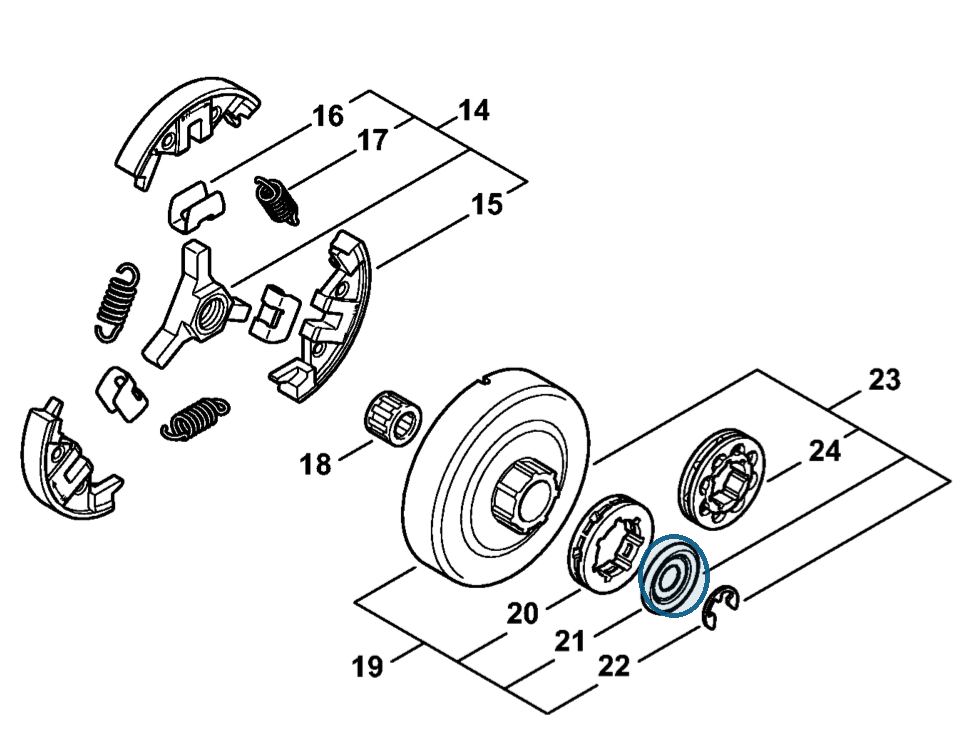

Washer Ø 27 mm
0000 958 1032
MS 462 — clutch drum
Retained by E-clip 9460 624 0801. Included in rim sprocket kit 1128 007 1001.
Item 21 Qty listed: 1

MS 462 C-M Z spare-parts list, 10/29/2024. Drawing p. 13; parts table p. 14.
0000 958 1032
Retained by E-clip 9460 624 0801. Included in rim sprocket kit 1128 007 1001.
Item 21 Qty listed: 1

MS 462 C-M Z spare-parts list, 10/29/2024. Drawing p. 13; parts table p. 14.